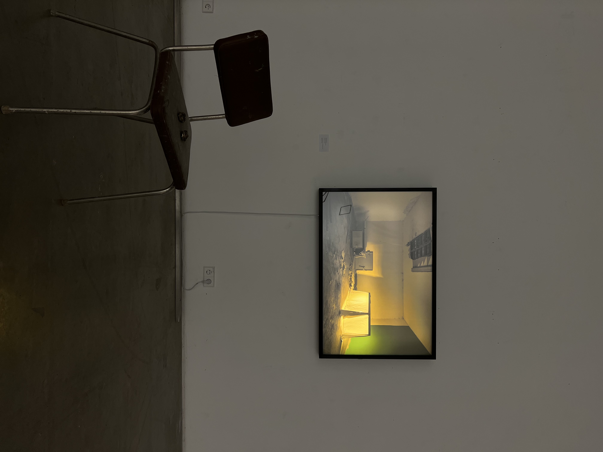
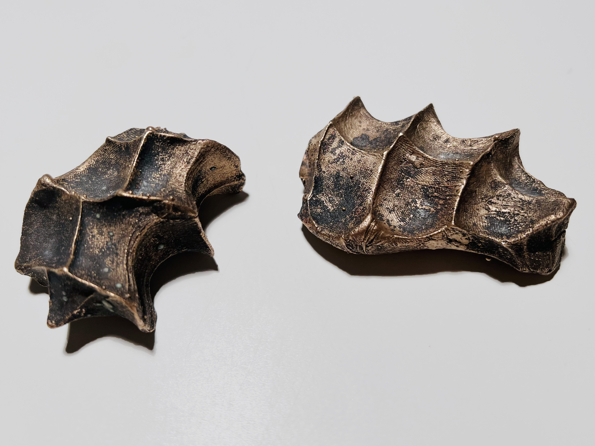
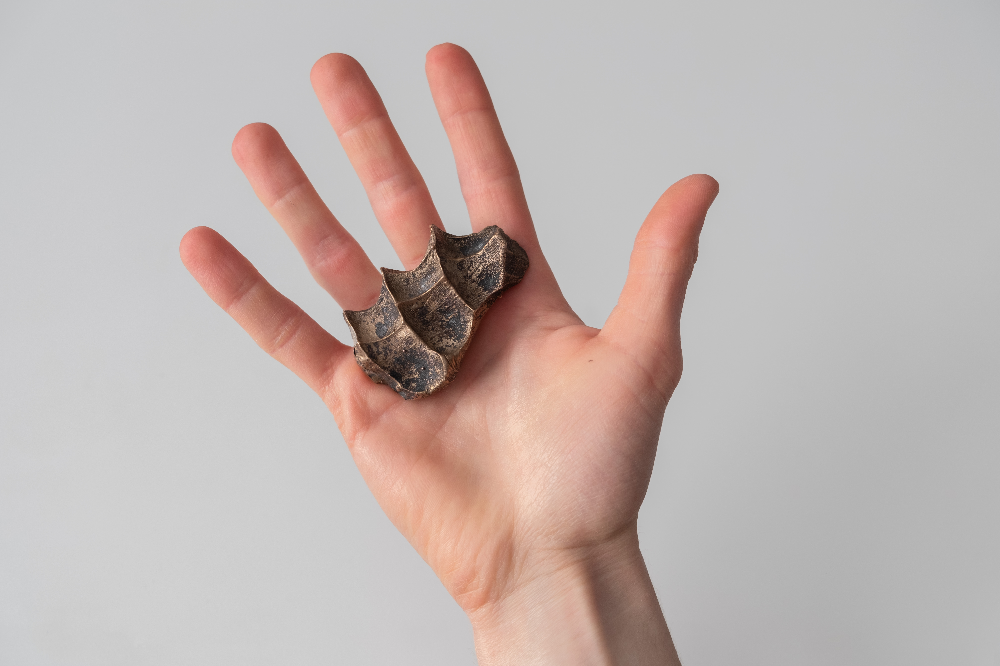

FINDING COMFORT IN THE UNCOMFORTABLE
2023
In a time of turmoil and my own anxious moments, I started thinking about safe spaces. The first thing people think of is their home or their room, but how can you help yourself when these spaces are not available? Often, hiding in places designed for shelter does not help to relieve fear or anxiety because they are scary and lack a familiar feeling.
What is this protective and reassuring space that can be accessed in any situation? What if it was something to put yourself around?
Holding a chestnut at the bottom of your pocket in autumn, a crumpled napkin in winter — these familiar sensory experiences can create a sense of security. These objects become a space we hold and control.
I made an installation in a bomb shelter built during the cold war. In the bomb shelter stands a writing desk covered with a white sheet. A warm yellow light emanates from under the cloth, which has an effect in the dimly lit concrete room. It feels safe, like forts built as a child. The bronze sculpture that sits flush in the palm of your hand is a unique hand-shaped space you can hold on to.



